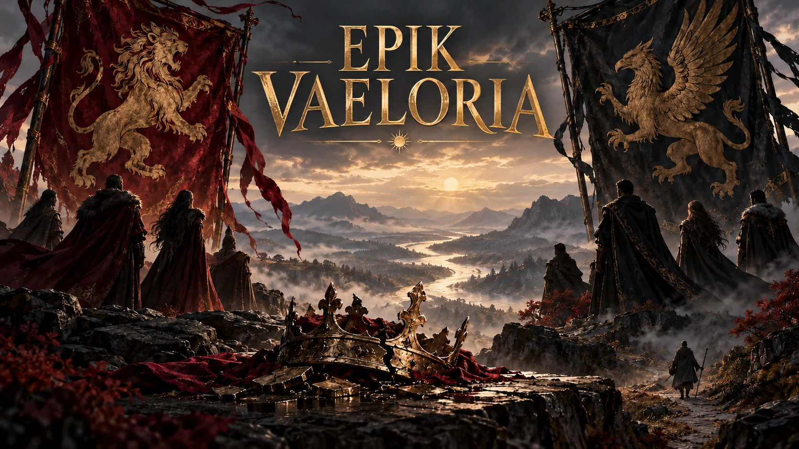

SEBUAH KRONIK · OLEH DANIMOAN
Darah. Sumpah.
Sebuah takhta.
Di tanah yang dibangun oleh para pemenang, setiap janji diwariskan bersama harganya.
FANTASI · DRAMA · POLITIK

LEMBAR-LEMBAR KISAH
Mulai membaca
DI TEPI RHENUS
SEBUAH KRONIK · OLEH DANIMOAN
Di tanah yang dibangun oleh para pemenang, setiap janji diwariskan bersama harganya.
FANTASI · DRAMA · POLITIK

LEMBAR-LEMBAR KISAH
DI TEPI RHENUS